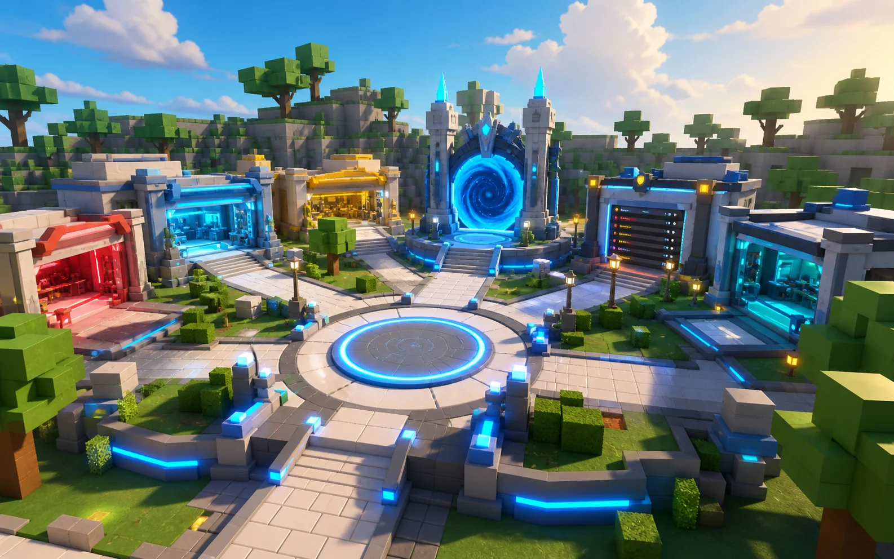
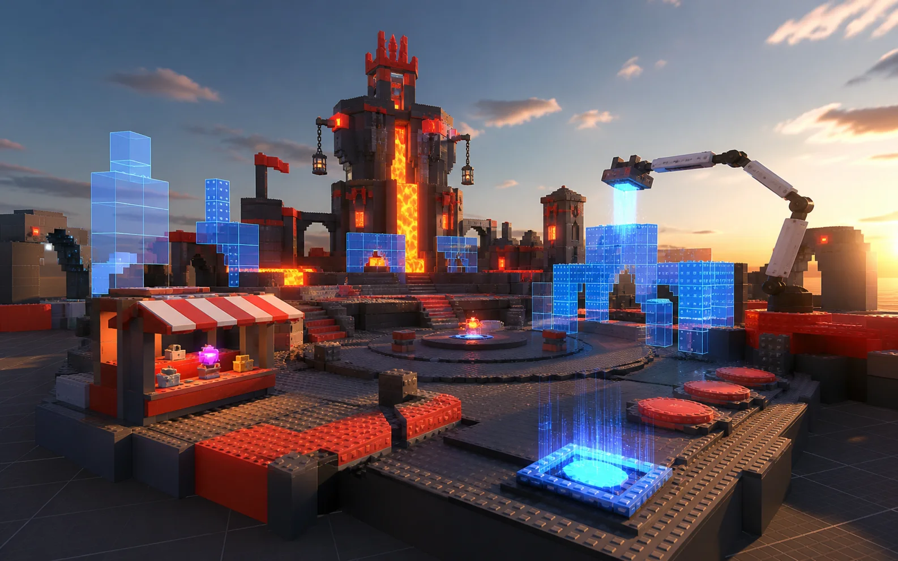
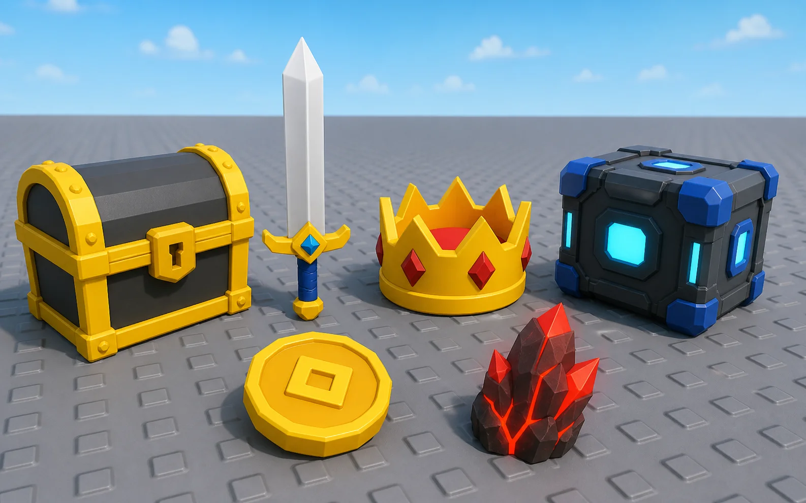

WORLD BUILDERMaps with structure
Generate lobbies, obstacle courses, arenas, props, lighting, and spawn layouts as one coherent world.
Turn one idea into a playable Roblox experience—world layout, Luau systems, UI, 3D assets, and launch art included.
Website → blueprint → Roblox Studio. You approve every change.

Build a round-based lava tower with a shop, wins leaderboard, and dramatic lobby.
Bloxy coordinates the parts that normally send you between chatbots, asset generators, Blender, and Studio.

WORLD BUILDERGenerate lobbies, obstacle courses, arenas, props, lighting, and spawn layouts as one coherent world.
Rounds, shops, data saving, leaderboards, tools, and interactions—planned as a system, not loose snippets.

TRIPO 3DCreate props and characters from text or images, then bring them into the same project.
HUDs, menus, shops, timers, and mobile-ready controls with consistent visual rules.

When the game is ready, create Roblox-authentic thumbnails based on the actual experience.
Review the blueprint first. Bloxy scans scripts, limits risky actions, and keeps Studio undo available.
Start with the game loop, an object, or one feature. Plain language is enough.
Inspect the world, scripts, UI, assets, and exact Bit cost in one blueprint.
The website connects privately to the Bloxy plugin without placing API keys in Roblox.
Test, revise, and keep building. You remain in control of the experience.
Bloxy keeps Gemini and Tripo credentials on its private backend. The plugin receives only approved build instructions and assets.
One Bit equals one cent of AI usage. Every action shows its price before you run it.
Explore the builder and pair your first Studio project.
2,200 Bits for Gemini and Tripo tools across your whole workflow.
Add Bits without changing your subscription. Purchased Bits do not expire.